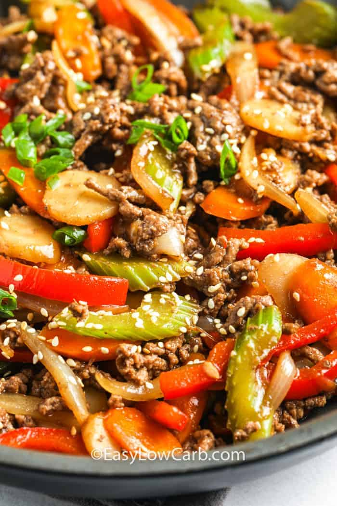

This beef stir fry brings together thinly sliced beef seared until caramelized, bright vegetables that stay crisp, and a bold sauce made with soy, garlic, ginger, and a touch of sweetness. Every bite delivers a balance of savory depth and fresh crunch, making it a quick, vibrant meal that tastes like it came straight from a wok.